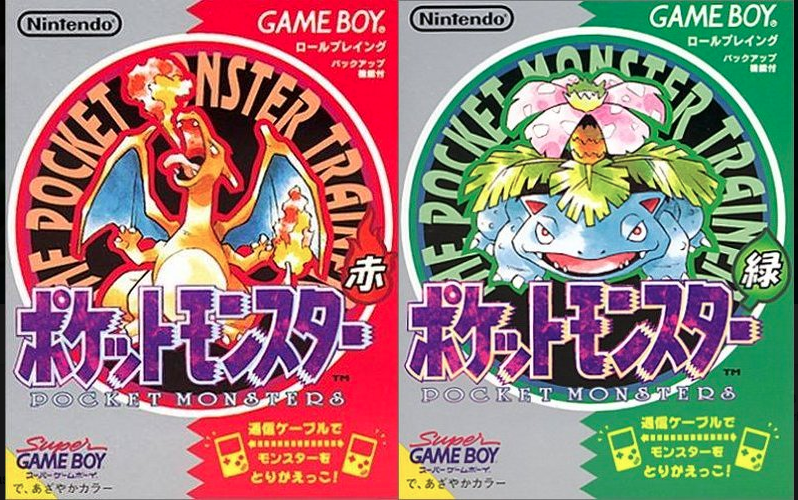
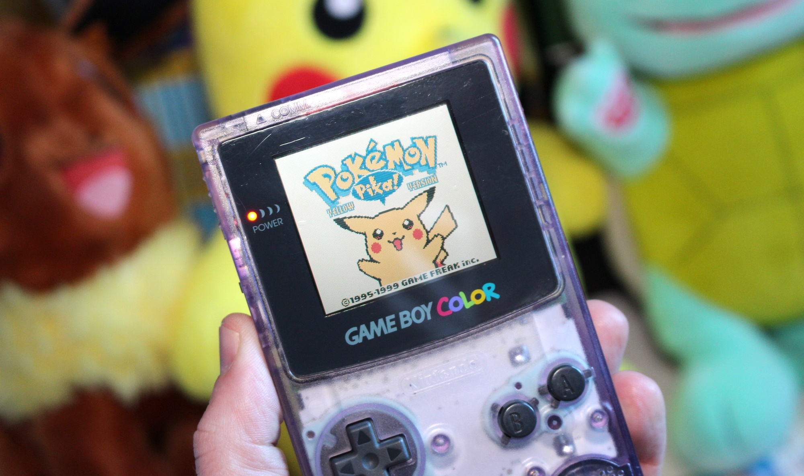

Origenes
Pokémon nació oficialmente el 27 de Febrero de 1996 con el lanzamiento de sus primeros juegos, Pokémon Verde y Rojo.

Creador
La idea nació de Satoshi Tajiri, originandose desde su interes en la colección de insectos desde niño.
Popularización
Esta franquicia se popularizo de manera masiva en 1999, con la llegada a Occidente de los juegos que Japón llevaba disfrutando 3 años, la serie de anime y el juego de cartas coleccionables; tomando el mercado de entretenimiento infantil por las riendas.
